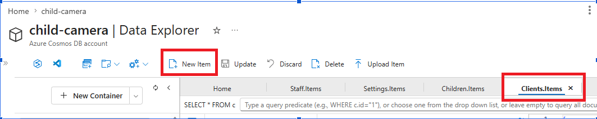
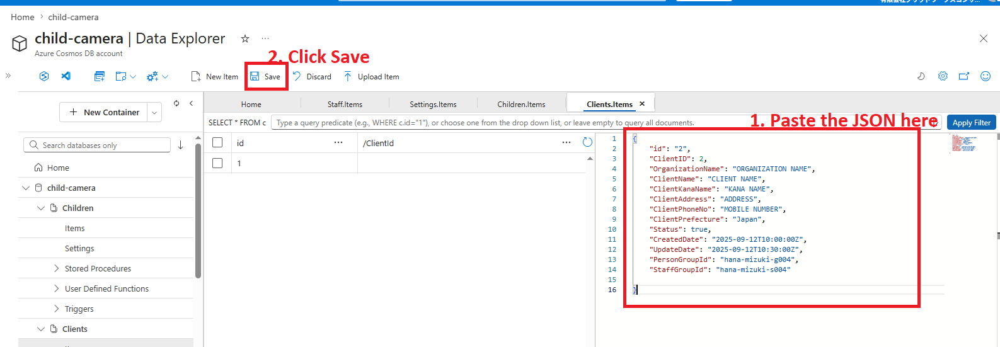
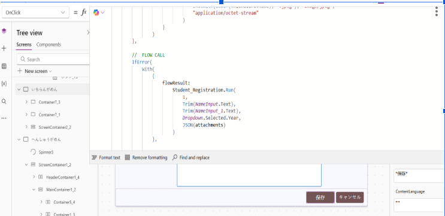
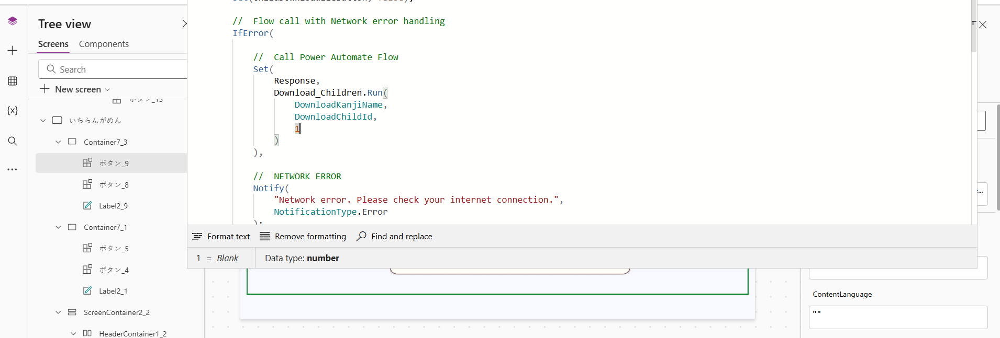
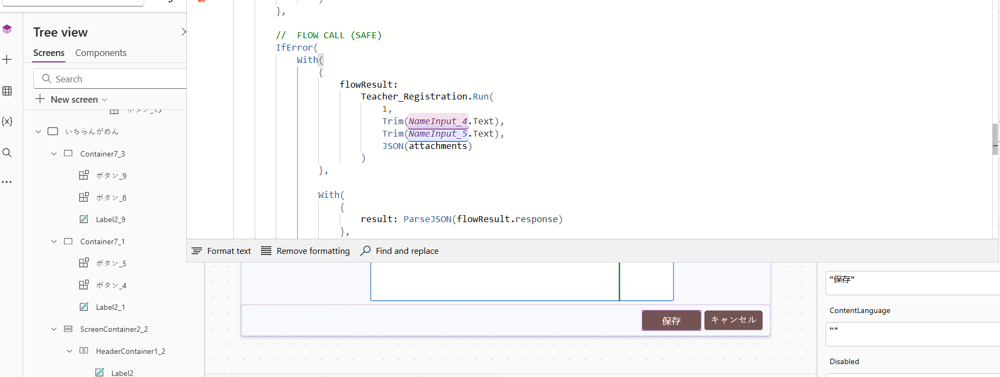
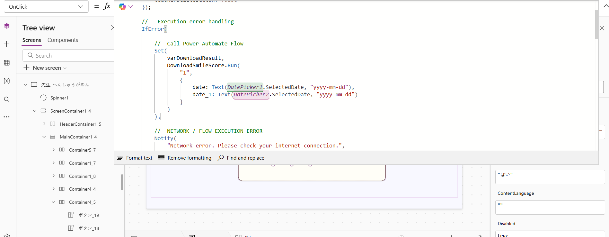
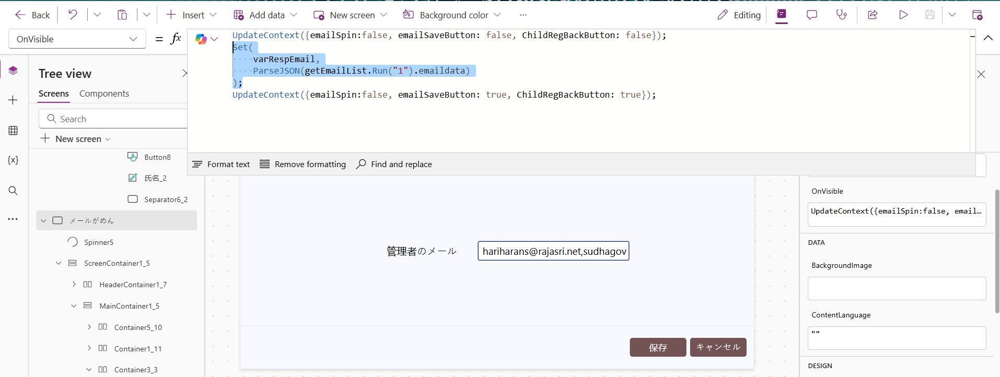
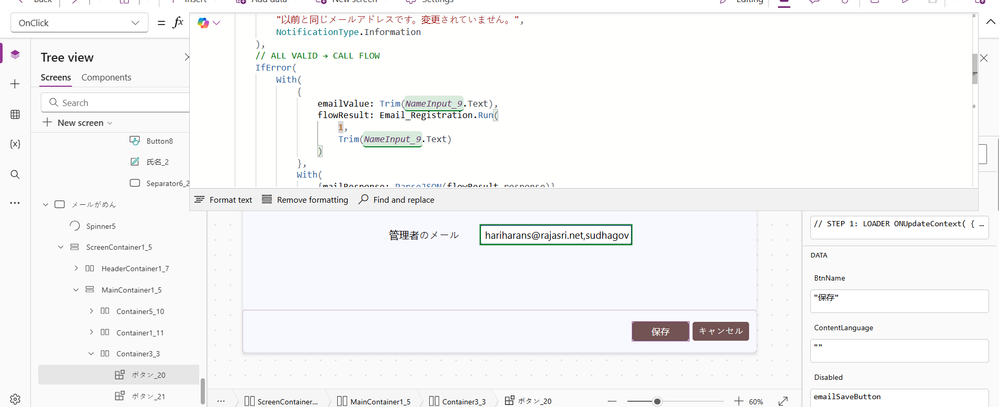

新規テナント（新規園）への導入時に実施するAzure・Power Platform側の作業手順
クライアント・園児・保育士・メール設定を保持するNoSQL DB
データ層管理画面（顔登録／写真DL／笑顔レポート）のフロントエンド
フロントPower Apps 背後のAPI群。Face API／ZIP／笑顔スコア処理
バックエンドOneDrive→Blob移行、OneDrive上のファイル削除
バックエンド| No. | リソース | レイヤ | 主な役割 |
|---|---|---|---|
| 1 | Azure Functions | バックエンド | Power Apps の全サーバー側機能を実装。Blob からの Face API 処理、Cosmos DB 登録、ZIPダウンロード、笑顔スコアダウンロード |
| 2 | Power Apps | フロントエンド | 先生・園児のUIデザイン（顔登録／一覧／ダウンロード／メール設定） |
| 3 | Power Automate | バックエンド | OneDrive から Blob への日次移行、OneDrive 上のファイル削除 |
| 4 | Cosmos DB（child-camera） | データ | Clients / Children / Staff / Settings コンテナを保持 |
リソース名：child-camera（Azure Cosmos DB アカウント）／ コンテナ：Clients

▲ Data Explorer → Clients.Items を開き「New Item」を押す
id と ClientID は 既存最大値＋1 を採番（既存が 1 なら 2）。PersonGroupId / StaffGroupId は 連番ルール（下記）で採番。
{
"id": "2",
"ClientID": 2,
"OrganizationName": "ORGANIZATION NAME",
"ClientName": "CLIENT NAME",
"ClientKanaName": "KANA NAME",
"ClientAddress": "ADDRESS",
"ClientPhoneNo": "MOBILE NUMBER",
"ClientPrefecture": "Japan",
"Status": true,
"CreatedDate": "2025-09-12T10:00:00Z",
"UpdateDate": "2025-09-12T10:30:00Z",
"PersonGroupId": "hana-mizuki-g004",
"StaffGroupId": "hana-mizuki-s004"
}

▲ 右ペインへJSONを貼付し、上部ツールバーの「Save」を押す
| 項目 | 既存（例） | 新規割当（例） |
|---|---|---|
| PersonGroupId | hana-mizuki-g005 | hana-mizuki-g006 |
| StaffGroupId | hana-mizuki-s005 | hana-mizuki-s006 |
Power Apps の管理画面は Solution（ソリューション）単位で他環境へ移送します。開発元環境から ZIP エクスポートし、クライアント環境へインポートします。
名前（例：ChildCameraSolution）／発行元／バージョン を入力
・Managed：クライアント納品用（編集不可の封入形式）
・Unmanaged：開発用（編集可能）
Cosmos DB の Clients コンテナで新規採番した ClientID（例：2）を、Power Apps 側の 8つのコネクタ呼び出しに反映します。
初期値はすべて 1（はなみずき）になっているので、新テナント用に書き換えてください。
| # | コネクタ名 | 使用画面／イベント |
|---|---|---|
| 1 | StudentList | Child List 画面 OnVisible ／ 削除確認 Yes ボタン |
| 2 | StudentRegistration | Children Registration 保存ボタン OnClick |
| 3 | Download_Children | Download Children ダウンロードボタン OnClick |
| 4 | StaffList | Staff 画面 OnVisible ／ 削除確認 Yes ボタン |
| 5 | Teacher_Registration | Teacher Registration 保存ボタン OnClick |
| 6 | DownloadSmileScore | Teacher List 笑顔ダウンロードボタン OnClick |
| 7 | getEmailList | 設定 → メール画面 OnVisible |
| 8 | Email_Registration | Email Settings 保存ボタン OnClick |
Set(
varChildResp,
StudentList.Run("1").studentdata
);
Set(
varChildResp,
StudentList.Run("2").studentdata
);
StudentList.Run("1") → "2" に変更
▲ 「保存」ボタンの OnClick に Student_Registration.Run が記述されている
Student_Registration.Run(
1,
Trim(NameInput.Text),
Trim(NameInput_1.Text),
Dropdown.Selected.Year,
JSON(attachments)
)
Student_Registration.Run(
2,
Trim(NameInput.Text),
Trim(NameInput_1.Text),
Dropdown.Selected.Year,
JSON(attachments)
)

▲ ボタン_9 の OnClick（Download_Children.Run の 3番目引数が ClientID）

▲ IfError / Notify を含む Full コード
Set(
Response,
Download_Children.Run(
DownloadKanjiName,
DownloadChildId,
1
)
)
Set(
Response,
Download_Children.Run(
DownloadKanjiName,
DownloadChildId,
2
)
)
Set(
varStaffResp,
StaffList.Run("1").staffdata
);
Set(
varStaffResp,
StaffList.Run("2").staffdata
);
"1" → "2"
▲ Teacher_Registration.Run の 1番目引数が ClientID
Teacher_Registration.Run(
1,
Trim(NameInput_4.Text),
Trim(NameInput_5.Text),
JSON(attachments)
)
Teacher_Registration.Run(
2,
Trim(NameInput_4.Text),
Trim(NameInput_5.Text),
JSON(attachments)
)

▲ DownloadSmileScore.Run の 1番目引数が ClientID
DownloadSmileScore.Run(
"1",
{
date: Text(DatePicker1.SelectedDate, "yyyy-mm-dd"),
date_1: Text(DatePicker2.SelectedDate, "yyyy-mm-dd")
}
)
DownloadSmileScore.Run(
"2",
{
date: Text(DatePicker1.SelectedDate, "yyyy-mm-dd"),
date_1: Text(DatePicker2.SelectedDate, "yyyy-mm-dd")
}
)

▲ メールがめんの OnVisible で getEmailList.Run("1") が呼ばれる
Set(
varRespEmail,
ParseJSON(getEmailList.Run("1").emaildata)
);
Set(
varRespEmail,
ParseJSON(getEmailList.Run("2").emaildata)
);
Email_Registration.Run(
1,
Trim(NameInput_9.Text)
)
Email_Registration.Run(
2,
Trim(NameInput_9.Text)
)
manual.kensetsu-total.support/hanamizuki）のアカウント情報を差し替え済み